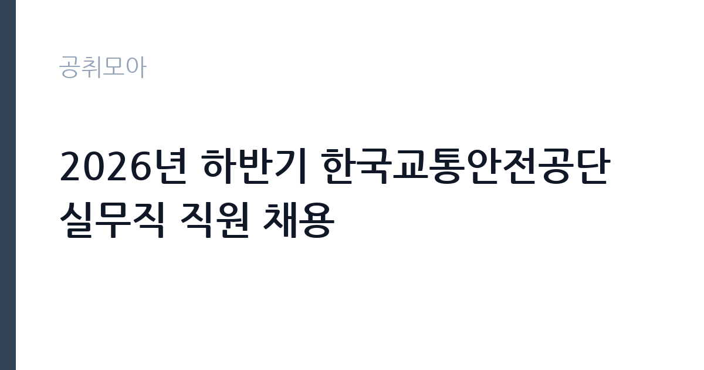

[공공기관] 2026년 하반기 한국교통안전공단 실무직 직원 채용
한국교통안전공단 · 전국 · 마감 2026-11-12 (D-15) · 출처 나라일터

한눈에 보는 모집 조건
| 기관 | 한국교통안전공단 |
|---|---|
| 공고명 | 2026년 하반기 한국교통안전공단 실무직 직원 채용 |
| 고용형태 | 정규직 |
| 근무지 | 전국 |
| 게시일 | 2026-10-28 |
| 마감일 | 2026-11-12 (D-15) |
지원자격, 이렇게 읽으세요
- 4급1단계(사무/검사/시설) 11명 5급1단계(시설) 2명 6급1단계(상
- 접수 ~2026-11-12 마감
- 세부 조건은 원문 공고문 확인
정규직 채용은 기간의 정함이 없는 근로계약을 전제로 합니다. 수습 기간을 두고 평가한 뒤 정규직으로 확정하는 절차가 일반적이며 기관의 인사 규정과 임금 체계를 적용받습니다. 이번 공고는 한국교통안전공단에서 직접 진행하는 자체 전형으로, 응시자격과 제출서류는 공고문에 항목별로 제시됩니다. 실무직은 직렬별로 요구 자격이 다릅니다. 시설(전기)은 전기 관련 자격을 요구하거나 우대하고, 검사는 운전면허와 차량 관련 이해가 실무에 필요합니다. 사무·상담은 문서 작성과 응대 능력을 봅니다. 학력과 경력 기준은 직급(4급·5급·6급 1단계)별로 다르게 적용되므로 본인이 지원할 직급의 요건을 정확히 확인해야 합니다. 장애인 구분모집은 해당 자격 요건이 별도로 명시되므로 일반전형과 혼동하지 마십시오. 서류는 접수 마감 이후 보완이 되지 않으므로 자격 요건과 증빙 서류를 마감 전에 모두 갖춰야 합니다. 공고문에 명시된 우대 사항은 해당 여부를 확인해 증빙을 첨부해야 가점이 반영됩니다. 학력이나 전공 요건이 없는 공고라도 제출서류 목록은 그대로 적용되므로 서류 준비 부담은 줄지 않습니다.
이 공고의 포인트
이 공고의 첫 번째 포인트는 고용 형태입니다. 수습 기간 평가를 통과하면 기간의 정함이 없는 신분이 되어 고용이 안정됩니다. 두 번째는 업무 범위가 명확하다는 점입니다. 실무직(검사·시설·상담·환경) 직무로 채용되므로 배치 이후 담당 업무가 크게 흔들리지 않습니다. 세 번째는 근무지입니다. 전국 지역 근무로 수도권 공고에 비해 지원자 분포가 넓지 않아 상대적으로 경쟁이 분산되는 경우가 있습니다. 같은 기관의 다른 공고와 접수 기간이 겹치므로 중복 지원 가능 여부를 확인해야 합니다. 다만 선발 인원이 11명으로 많지 않아 자격을 갖춘 지원자가 몰리면 경쟁률이 높아질 수 있습니다.
전형은 어떻게 진행되나
전형은 서류심사와 면접심사를 기본으로 하고 직무에 따라 필기나 실기, 체력검정이 추가됩니다. 서류 단계에서는 응시자격 충족 여부와 제출서류 형식을 확인하며 이 단계에서 탈락하는 지원자가 적지 않습니다. 면접은 직무 이해도와 경험을 확인하는 방식으로 진행되고 발표는 개별 통보나 홈페이지 게시로 이뤄집니다. 최종합격 이후에는 결격사유 조회와 채용 신체검사가 이어지며 이 절차에서 문제가 확인되면 합격이 취소될 수 있습니다. 구체적인 전형 단계와 배점은 공고문에 표로 정리되어 있으니 원문을 기준으로 준비하십시오. 경력 증명서에 직무 내용이 적혀 있지 않으면 인정받지 못할 수 있으므로 상세 기재를 요청하십시오.
원문에서 확인한 전형 방식
■ 모집분야 및 인원 ㅇ 사무 : 1명 [사무(장애인)(4급 1단계) 1명] ㅇ 검사 : 9명 [검사(4급 1단계) 9명] ㅇ 시설 : 3명 [시설(전기)(4급 1단계) 1명] [시설(전기)(5급 1단계) 1명] [시설(일반)(5급 1단계) 1명] ㅇ 상담 : 3명 [상담(6급 1단계) 2명] [상담(장애인)(6급 1단계) 1명] ㅇ 환경 : 15명 [환경(6급 1단계) 15명] ■ 전형내용 ㅇ 원서접수 → 서류 → 면접 → 합격자결정 ㅇ 기타 자세한 사항은 공고문 참조 ■ 전형일정 ㅇ 채용공고 : 10.28.(수) ㅇ 원서접수 : 11.2.(월) ~ 11.12.(목) 18:00 ㅇ 서류합격자 발표 : 11.27.(금) ㅇ 인성검사 : 11.27.(금) ~ 11.29.(일) (온라인 검사) ㅇ 면접전형 : 12.2.(수) ~ 12.4.(금) ㅇ 합격예정자 발표 : 12.17.(목) ㅇ 최종합격자 발표 : 12.24.(목) ㅇ 임용예정일 : 12.31.(목) ■ 응시방법 : 온라인 입사지원시스템을 통한 접수(https://kotsa.career.co.kr) ■ 문의처 : 채용콜센터(02-2006-9534) 또는 공단 인재개발처(054-459-7199, 7197
이런 분께 추천해요
- 지원 직렬의 자격·경력 요건을 충족하는 분
- 현장 근무와 교대·배치 이동을 수용할 수 있는 분
- 민원 응대와 절차 준수에 거부감이 없는 분
지원 전 체크리스트
- 응시자격 요건과 경력 기준을 충족하는가 — 경력은 증명서로 입증해야 합니다
- 수습 기간과 정규직 전환 조건을 확인했는가
- 제출서류 목록을 모두 준비했는가 — 누락 시 서류 단계에서 탈락합니다
- 접수 마감 2026-11-12 이전에 접수 방식을 확인해 제출했는가
모집 일정과 제출 타이밍
접수 마감은 2026-11-12이고 공고는 2026-10-28에 게시되었습니다. 준비 기간 15일 안에 서류 작성, 증빙 발급, 접수를 모두 마쳐야 하므로 주말을 포함해 일정을 미리 나누는 것이 좋습니다. 특히 경력 기술서나 직무수행계획서를 요구하는 공고는 작성에 시간이 걸리므로 첫날 초안을 잡으십시오. 서류 합격자 발표와 면접 사이 간격이 짧은 경우가 많아 면접 예상 질문은 서류 제출 전에 정리해 두는 편이 유리합니다. 마감 직전에는 접속이 몰리므로 여유를 두고 제출하십시오. 공휴일이 끼어 있으면 증명서 발급이 늦어질 수 있으니 발급 일정을 앞당기십시오. 근무지 세부 위치와 출퇴근 조건은 공고문에서 확인하는 것이 가장 정확합니다. 마감까지 여유가 있어 자격 요건을 천천히 확인하고 준비할 수 있습니다. 선발 인원이 한 자릿수를 넘어 서류와 면접 점수를 함께 관리하는 전략이 필요합니다.
직무 이해하기: 공공기관
공공기관은 도로와 수자원, 농지, 부동산 시장 관리 같은 공적 기능을 수행합니다. 현장 사업소는 도로와 시설 유지 관리, 조경과 환경 관리 업무를 직접 수행하며 계절 사업에 따라 기간제 인력을 채용합니다. 실무직은 기관의 검사·시설·상담·환경·사무 업무를 현장에서 직접 수행하는 직군입니다. 검사는 자동차 검사소에서 차량을 검사하고 결과를 전산에 입력하는 일이 중심이고, 시설은 전기·기계 설비의 점검과 유지보수를 맡습니다. 상담은 고객 응대와 민원 처리, 사고 조사 안내를 담당하고, 환경은 사업장 환경 관리와 측정 지원 업무를 수행합니다. 배치되는 직렬에 따라 근무지와 교대 형태가 달라지므로 지원 시 어느 직렬로 접수하는지가 가장 중요합니다. 현장 업무 비중이 높아 안전 수칙과 절차 준수가 평가의 기본입니다. 업무는 혼자 처리하기보다 부서 단위로 나눠 진행되므로 담당 구역과 협업 범위를 입사 초에 확인하는 것이 중요합니다. 업무 강도와 근무 시간대는 부서 배치에 따라 달라지므로 면접에서 확인하는 것이 가장 정확합니다.
자기소개서 작성 팁
지원서는 희망 직렬을 첫 문단에서 분명히 밝히고 그 직렬에 맞는 경험을 배치하십시오. 검사는 검사 건수와 오류율, 시설은 담당 설비와 정비 실적, 상담은 응대 건수와 민원 해결 사례를 수치로 제시하면 설득력이 생깁니다. 여러 직렬에 걸친 추상적 서술은 피하고, 배치 지역 이동을 수용할 수 있다는 점을 함께 적으십시오. 구성은 지원 동기, 직무 경험, 기여 방안 순서가 무난합니다. 지원 동기는 한국교통안전공단의 사업 중 본인이 관심을 가진 부분을 한 가지로 좁혀 서술하고 추상적인 표현은 줄이십시오. 직무 경험은 담당했던 업무와 규모, 결과를 수치로 제시하면 설득력이 올라갑니다. 기여 방안은 입사 후 첫 3개월과 1년 계획으로 나눠 쓰면 준비도가 드러납니다.
면접 준비 포인트
면접에서는 직렬별 실무 이해도를 확인합니다. 검사 직렬은 검사 절차와 부적합 판정 시 응대 방법을, 시설 직렬은 설비 이상 시 조치 순서를 묻습니다. 상담 직렬은 강한 민원 응대 경험을 구체적으로 답해야 합니다. 인성검사가 별도로 진행되므로 일관된 태도를 유지하는 것이 중요하고, 배치 지역과 교대 근무 수용 여부도 확인합니다. 답변은 상황, 판단, 조치의 순서로 정리하면 전달이 분명해집니다. 모르는 질문에는 모른다고 밝히고 확인 방법을 제시하는 편이 억지 답변보다 낫습니다. 마지막에는 근무 의사와 함께 2026-11-12 이후 일정에 언제든 응할 수 있다는 점을 전달하십시오. 마지막 질문 시간에는 근무 조건에 대한 확인 사항을 한 가지 정도 준비해 가면 성실성이 드러납니다.
급여·근무조건 읽는 법
알리오(공공기관 경영정보 공개시스템) 2025년 결산 경영공시 기준으로 한국교통안전공단 일반정규직 1인당 평균보수액은 8,021만원, 공시된 신입사원 초임은 4,433만원입니다. 무기계약직 1인당 평균보수액은 4,105만원으로 공시되어 정규직과 차이가 납니다. 평균보수액은 기본급에 고정수당·실적수당·성과상여금·급여성 복리후생비를 모두 합산한 값이라 월 기본급만 보고 판단하면 실제와 크게 어긋납니다. 정규직 신입의 경우 공시된 신입사원 초임이 출발점이 되고, 이후 호봉과 성과급에 따라 평균보수에 접근합니다. 실무직 보수는 공단 임금 규정의 직급(4급·5급·6급 1단계)별 기본급에 각종 수당을 더한 구조입니다. 직렬과 근무지에 따라 교대·야간 수당이 붙고, 자격 수당이 별도로 운영되는 경우가 있습니다. 처우표에 직급별 금액이 제시되므로 지원 직급 기준으로 확인해야 합니다. 2026년 적용 최저임금은 시급 10,320원, 월 환산 2,156,880원(주 40시간·209시간 기준)입니다. 고용노동부 고시 제2025-47호로 확정된 금액입니다. 공고문에 금액이 제시되지 않은 항목은 원문 보수표나 처우 설명에서 확인해야 하며 확인되지 않은 수치는 쓰지 않는 것이 원칙입니다. 비교할 때는 월 급여뿐 아니라 상여·명절휴가비·복지포인트·초과근무수당까지 포함한 연간 총액으로 계산하십시오. 기간제라면 계약 기간 동안의 총액을, 무기계약이라면 호봉 상승과 정년까지의 누적 소득을 기준으로 판단하는 편이 정확합니다.
자주 묻는 질문
- 선발 인원은 몇 명인가요?
공고문 기준 11명입니다. 직종별로 인원이 나뉘는 경우가 있으니 모집분야 항목을 함께 확인하십시오. - 근무지는 어디인가요?
전국 지역의 한국교통안전공단 소속 근무지입니다. 세부 주소와 출퇴근 조건은 원문 공고문에서 확인할 수 있습니다. - 보수는 얼마인가요?
채용 신분(정규직)과 기관 임금 규정에 따라 정해지며 구체적인 금액은 공고문 처우 항목에 제시됩니다. 금액이 공개되지 않은 경우에는 원문의 보수표를 확인하십시오.
함께 보면 좋은 공고
[공공기관] 2026년 제2차 국외소재문화유산재단 직원 채용(6급, 임시계약직 사업A/사업B) — 마감 2026-11-09[공공기관] 한국농어촌공사 금강사업단(보훈/장애제한경쟁) 공무직(청소원) 채용 — 마감 2026-11-13[공공기관] 분당서울대학교병원 진료교수요원(핵의학과) 채용공고 — 마감 2026-11-09출처: 나라일터 공개정보를 바탕으로 공취모아가 정리한 안내글입니다. 모집 조건·일정은 변경될 수 있으니 지원 전 반드시 원문 공고문을 확인하세요. 본 글은 정보 제공용이며 합격을 보장하지 않습니다.